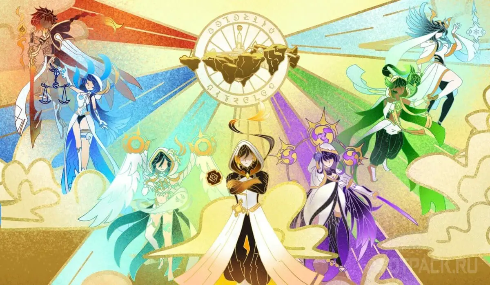
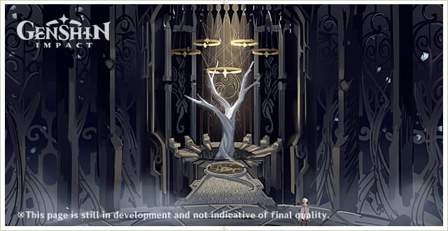
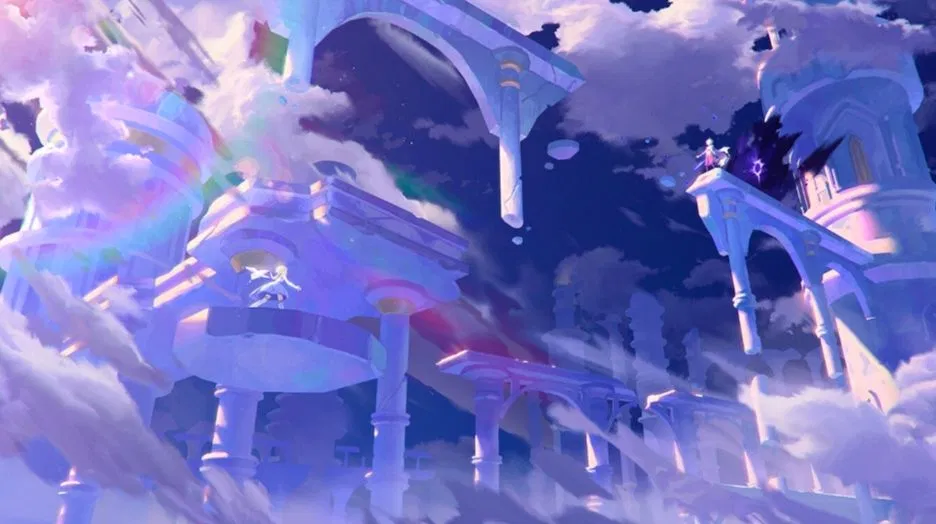
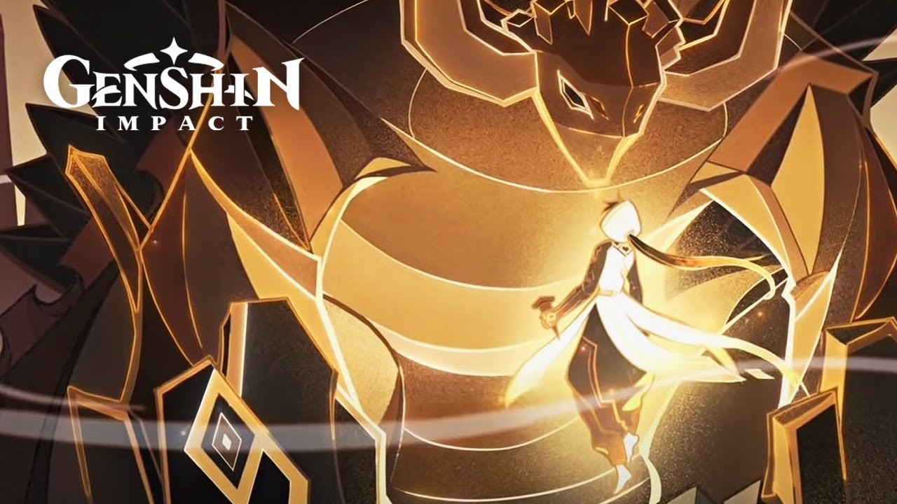

Lore | Genshin Impact
Lore is the catch-all term for story, world-building, and anything in the game that is not related to Game Systems. Various aspects of lore are usually analyzed to expand upon the knowledge of the in-game universe.
Key events in lore
- The First Throne
- Selestia
- Guily Assembly
- The Archon War
- Sibling's Journey
- Khaenri-ah Cataclysm
- Nowadays
The lore of the game is very extensive, so most likely I will not be able to fit everything here

Lore
It is hard to explain entire lore of this game in one page, so it is shortened version
The First Throne
All the events described below related to the Ancient Teivat took place at an unknown time in the past, preceding all dated events, including the birth of Morax more than six thousand years ago.

The Seven Lords
? Before G.E.: Ancient Teivat is inhabited mainly by dragons and Vishaps, who are the masters of the world.
The First Throne
The Primordial One, also known as the Throne of Eternity in heaven, arrived in Tivat from another world. The Primordial One fought seven terrible sovereigns, the dragon lords of the old world, thereby establishing his power in Teivat. With the appearance of the throne of eternity in heaven, the world was created anew. The original may have been Ufanet. He had wings and a crown, he was born from an egg and was androgynous by nature. But to create a world, the eggshell must break. However, Phaneth, the Primordial One, used an eggshell to separate the "universe" and the "microcosm of the world". Fanet, the Primordial One, created the shining shadows of himself, and there were four of them
Selestia

Selestia - The Second Throne
? before G.E.: The Year of mourning The second throne appeared in heaven, and war broke out again, as it was at the creation of the world. On that day, the heavens collapsed and the earth split apart. The ancestors of the Encanomians and their land, Encanomia, sank into the sea. The era of darkness has come
We don't know who won - Fanet or the Second Who Came but whoever emerged victorious and took control of the heavens forbade knowledge of the history that predated this war
Guily Assembly

The Dust Archon - Guizhong
? before G.E.: In ancient times, when people united for common prosperity, the Archon of Dust, Gui Zhong, descended to them. She gave people the covenants by which they lived. Their state was huge: from the north of Tian Heng Mountain to the Stone Gate. At the same time, the first roads were laid.
The Geo Archon - Zhongli
Approximately before 6000 GE: Birth of Geo Archon, later known as the Lord of the Stone
3700 years before GE : Date of foundation of Li Yue. At the same time, the Lord of the Stone signed contracts with Adepts to protect the territories of Li Yue.
? before G.E : It is not known exactly when Geo Archon and Archon Dust met, but they became good friends. Their nations united for common prosperity in the fertile Guli Valley under the patronage of two Archons. It is known that at that time there were fertile fields of this people on the site of the Reed Islands, and on the borders of their territories the Guardian of Clouds and the Archon of Dust erected ballistae.
The Archon War
This is too large event, and i can't put everything here so i just tell about the key moments
The Archon War in Mondstadt
Approximately 2600 years before G. E. : The beginning of the war in Mondstadt. People are tired of the tyranny of Decarabian, and his beloved was no exception. One of his loyal servants gathered his clan and fled outside the ancient capital into the arms of eternal snows and blizzards. But life on the barren lands was impossible. Then the daughter of the clan chief, Gunnhild, begged the winds for mercy. Her prayer reached the little wind spirit, Barbatos, and he helped the Gunnhildra clan survive. Later, when Barbatos challenged the despot Anemo Archon, Gunnhildra and her people were among those who supported the struggle for the freedom of Mondstadt.
2600 years berfore GE: One day the wind spirit, Barbatos, met a young man who lived under the tyranny of an Anemo Archon. The young man was a bard who wanted to compose songs and play the lyre. He was one of those who raised resistance, the war for freedom broke out. Many rebelled against the Decarabian order. As a result, the old Anemo Archon was defeated, and Barbatos replaced him. But the young bard, who became a friend of the wind spirit, died in the battle for his ideals. After becoming the new Archon, Barbados assumed the form of his friend so that his lyre would never cease.
The Archon War in Liyue
2500 years before GE : While wars raged throughout Taiwan, Li Yue's keepers were concerned about the safety of their lands and inhabitants. According to legends, the Lord of the Stone slaughtered every hostile god with huge spears. The adepts, including Guan Yu, fought on the side of the Lord of the Stone. Many creatures, now considered fabulous, were summoned by the Lord of the Stone to protect the territories of Li Yue. Ordinary people also participated in the war, for example, brigades of Milliliters. The battle in the valley of Guli was terrible, in addition to many losses, Li Yue's land was also deprived of the Archon of Dust.
? Before G. E.: The Geo Archon called the Yaksa to fight demons, creatures defiled by the blood of the former gods of Li Yue. There were five Ajax: Fouche, Fa Nan, Inda, Mi Nu, Alatus. Each of them was awarded the power of one of the elements that helped them in their difficult struggle. However, even the strongest X's could not serve forever: three died, the fourth disappeared, the only Alatus continues his patrol.
The Archon War in Inazuma
Approximately 2000 before GE: The twin goddesses Raiden Makoto (Baal) and Raiden Hey (Beelzebub) defeat all the other gods in Inazuma. Despite the fact that Ei fought well, she considered herself only a warrior who understood little about the souls of people. For this reason, she sacrificed her bodily form so that Makoto ascended to Celestia and became an Electro Archon. After the first Shogun Raiden received the divine throne, founded the shogunate and began her reign, she summoned the divine essence of her sister, recreated her body for her and made her her "shadow samurai" - "kagemusya".
The End of The Archon War
2000 years before G. E. : After the centuries-old wars, only seven Archons remained out of the multitude. They divided the lands and built states that still exist today. However, in the world of Teivat, even the Gods are mortal, and the composition of the Seven has changed more than once over two thousand years. Only Geo and Anemo Archons have remained the same since those times. Those gods who could not come to terms with the orders of the Seven fled across the Dark Sea – to distant islands where recognized Archons have no power.
Sibling's Journey

The fight against Unknown God
Aether and Lumine fall to Teyvat while traveling between different worlds after their home world was destroyed. They crash-land and fall unconscious from their "meteorite" impact.
The twins attempt to leave immediately, only to be stopped by the Unknown God. The twins battle against the Unknown God in last-resort attempt to leave, spawning wings and custom swords. The twins lose the fight, with the Unknown God trapping the Traveler's sibling first within a cube, and then the Traveler after they attempt to free their sibling. The Traveler falls asleep within the cubes once again for the next 500 years.
After fight
The Traveler's sibling wakes up first and learned more about Teyvat. The sibling witnesses the cataclysm and the Gods destroying Khaenri'ah. They rush back to their impact-point and wake up The Traveler, showing them the destruction that's being wrought in Khaenri'ah
Due to the Traveler's sibling's journey with Dainsleif taking place after the cataclysm, it is presumed that the sibling here has only briefly explored Teyvat before encountering the cataclysm
Khaenri-ah Cataclysm
.jpg)
Pre-Cataclysm
? years ago ― Pierro is unable to stop the ruler of Khaenri'ah or the sages from "tearing away the veil of sin." This results in Khaenri'ah's destruction at the hands of the Heavenly Principles
The Cataclysm
Monsters from the Abyss invade the aboveground world of Teyvat, causing widespread devastation. The people of Teyvat attribute the creation of these monsters to a "great sinner," Gold, also known as Albedo's master and mother Rhinedottir. The Kingdom of Khaenri'ah is destroyed by the Heavenly Principles, causing the fall of the Eclipse Dynasty and the entire civilization. Khaenri'ah's destruction causes a devastating ripple effect. The Seven become involved in Khaenri'ah after the Abyss' invasion of Teyvat
Nowadays
.jpg)